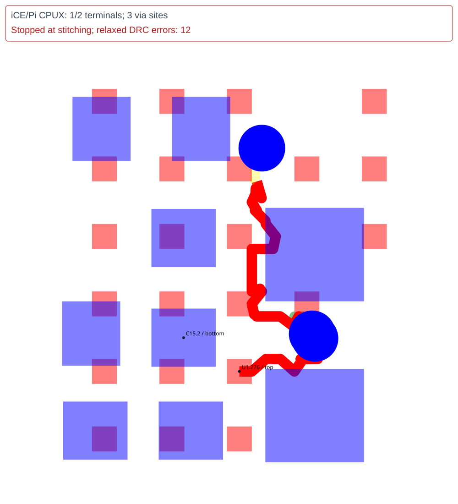
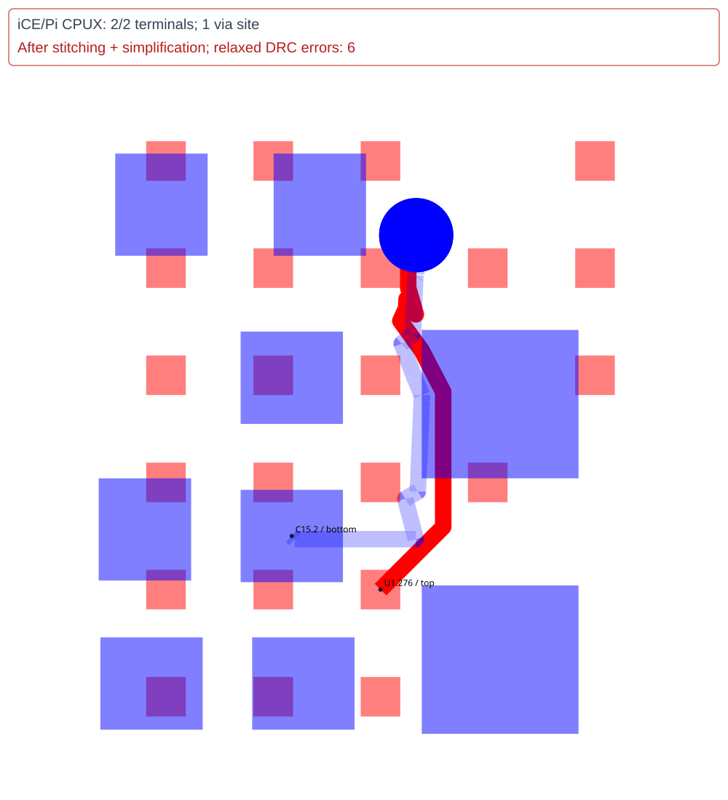

Same 24 captured route fragments, 32 pads, frame and scale. The test runs stitching, then production canonicalization and trace simplification if stitching succeeds. Both SVGs are generated by the checked-in test; stacking the fix updates the same snapshot file.
Repro #3893 · Stacked fix #3894 · Before test · After test
| Measured crop result | Before | After |
|---|---|---|
| Terminals reached on their required layers | 1/2 | 2/2 |
| Via positions | 3 | 1 |
| Via span records | 3 | 2 at the same position |
| Relaxed DRC findings | 12 | 6 |
| Last stage | Stitching failed | Native simplification completed |


This crop stops before whole-board joint DRC repair. The red summaries retain its remaining clearance findings. The routing logic and dependency versions are unchanged from the already benchmarked fix. SVG rendering is in fixture helpers. The revised after-test rejects the original solver and passes with the fix.